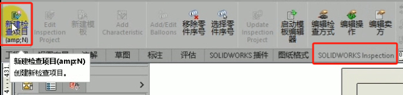
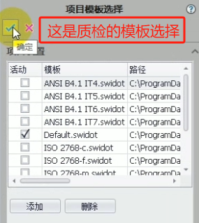
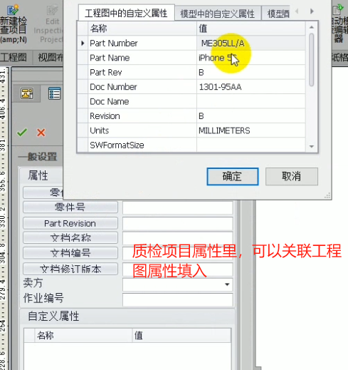
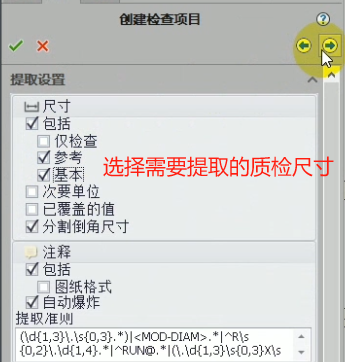
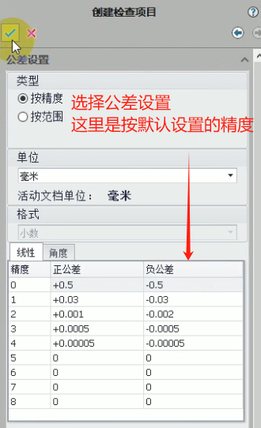
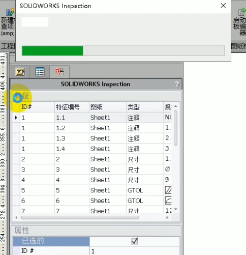
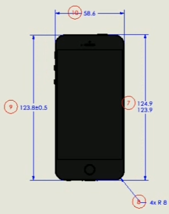
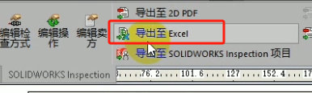
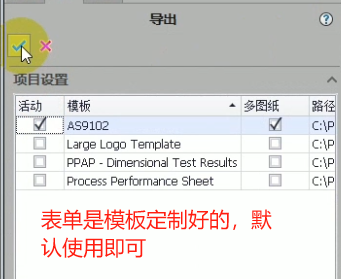
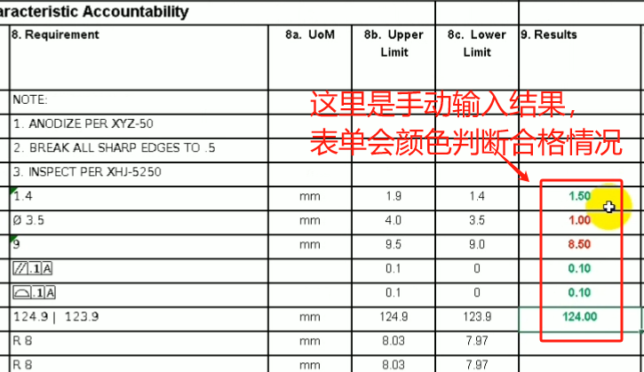

SOLIDWORKS Inspection
可以作为单独购买的产品与 SOLIDWORKS Standard、SOLIDWORKS Professional 和 SOLIDWORKS Premium 配合使用，也可以作为完全独立的应用程序使用（请参见 SOLIDWORKS Inspection Standalone）
SOLIDWORKS Inspection 插件
准备工程图
新建质检项目
    确定后，软件会自动提前尺寸并开始标球号
 修改
导出
 使用
注意：使用导出的表单时，这一份表格文档是质检模板（未填结果数据的），这也是inspection的主要功能。
然后质检人员，通过测量工具将数据回填到表格内，即可进行颜色上的区分判断合格情况

当您打开包含 3D 注解或产品制造信息 (PMI) 的 SOLIDWORKS 零件或装配体时，您可以创建新的
检验项目并为检验清单提取所有信息。
要从 SOLIDWORKS 零件或装配体创建检验报告：
- 单击新建检验项目 (CommandManager)。
- 选择项目设置和提取设置。
使用各个复选框来设置项目。 例如，您可以包括或排除尺寸、注释、GD&T 和孔标注，然后
SOLIDWORKS Inspection 会将零件序号添加到 PMI。 然后质量检验人员可以参考检验电子表格和
3D 模型来了解需要检验的特性。
您可以使用自动或手动提取模式。
检验特性将被列示在特性树中。 您可以修改特性属性以包括诸如操作、分类和检验方法等其他信息。
此外，您可以对其重新排序
输出
项目完成后，您可以生成：
• Microsoft®Excel 报告
• 2D PDF
• 3D PDF（如果 SOLIDWORKS MBD 可用）
• eDrawings 文件